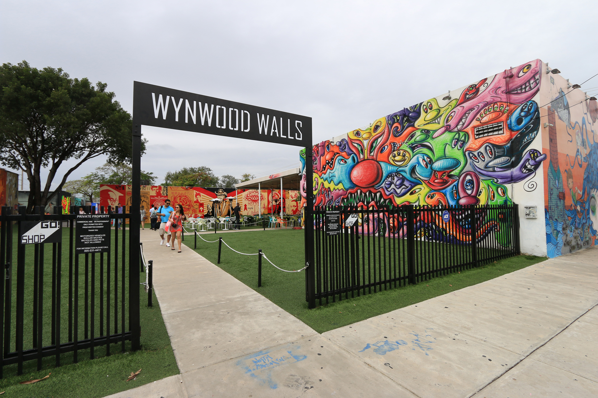

Points of Interest:
A historical Italian estate first built in 1916 as a private winter retreat for American Businessman James Deering, this beautiful villa pays tribute to the Italian Renaissance era. On this site tourists can visit a Museum that still has its earlier furnishings and artwork intact, as well as its beautiful formal gardens. Many tourists say this is one of the best bay views in Miami!
Star Rating: 5 / 5
Open to the public, and free of charge! Doesn’t get any better than that. Wynwood Walls was first established and opened in 2009 by well-known art visionary Tony Goldman. This outdoor museum features more than 40 street art murals from some of the leading street artists around the world. If you’re an up-and-coming artist looking for inspiration, this place is a must see! #History #Active #OceanView 
Star Rating: 4 / 5